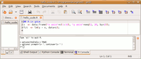
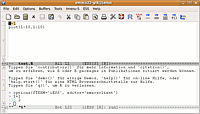
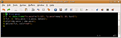
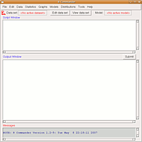
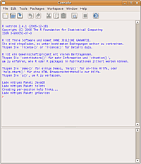

R
Dieser Artikel wurde für die folgenden Ubuntu-Versionen getestet:
Ubuntu 16.04 Xenial Xerus
Zum Verständnis dieses Artikels sind folgende Seiten hilfreich:
GNU R  ist eine freie Statistikumgebung. Es kann einerseits als Alternative zu kommerziellen Statistikprogrammen wie Stata oder SPSS verwendet werden, es bietet aber auch Möglichkeiten für fortgeschrittene (statistische) Programmierung. R ist eine freie Implementierung der statistischen Programmiersprache S bzw. S-Plus.
ist eine freie Statistikumgebung. Es kann einerseits als Alternative zu kommerziellen Statistikprogrammen wie Stata oder SPSS verwendet werden, es bietet aber auch Möglichkeiten für fortgeschrittene (statistische) Programmierung. R ist eine freie Implementierung der statistischen Programmiersprache S bzw. S-Plus.
Während R selbst eine reine Kommandozeilenanwendung ist, ermöglichen grafische Benutzeroberflächen einen leichteren Zugang.
Installation¶
R besteht aus einem Basisprogramm sowie einer Vielzahl von ergänzenden Paketen. Die Sektion universe der offoziellen Paketquellen enthält eine größere Anzahl von R-Paketen. Weitere können über CRAN , das Comprehensive R Archive Network (Rs Pendant zu CPAN für Perl und CTAN für TeX) hinzuinstalliert werden.
Für eine Basisinstallation muss das folgende Paket installiert werden:
r-base (universe)
 mit apturl
mit apturl
Paketliste zum Kopieren:
sudo apt-get install r-base
sudo aptitude install r-base
Zusätzlich empfiehlt sich das Paket:
r-recommended (universe)
mit apturl
Paketliste zum Kopieren:
sudo apt-get install r-recommended
sudo aptitude install r-recommended
Es gibt eine Reihe von weiteren R-Paketen, deren Namen alle mit r-cran beginnen Übersicht).
Zusätzliche R-Pakete installieren¶
R bringt eine eigene Paketverwaltung mit. Sollte ein Zusatzpaket nicht über die Ubuntu-Paketverwaltung (als r-cran-paketname) verfügbar sein, kann man dies auch aus R heraus direkt aus dem CRAN installieren. Dazu benutzt man in R folgenden Befehl:
install.packages(c("paket1","paket2")) Startet man R mit Root-Rechten (sudo R), werden die Pakete für alle Nutzer installiert. Andernfalls sind die installierten Pakete nur dem aktuellen Nutzer zugänglich.
Aktuelle R-Version installieren¶
Für die meisten Zwecke reicht die Version aus den offiziellen Paketquellen aus. Zudem bietet sie den Vorteil, dass viele Pakete von CRAN über die Ubuntu-Paketverwaltung verfügbar sind. Gelegentlich kann es jedoch notwendig sein, mit der aktuellsten R-Version zu arbeiten. Dies ist zum Beispiel dann der Fall, wenn man ein Zusatzpaket installieren will, das eine neuere R-Version voraussetzt als in den Ubuntu-Quellen vorhanden ist.
Allerdings bringt es auch Nachteile mit sich, R über diese Quelle zu installieren:
Es sind weniger CRAN-Pakete über diese Quelle verfügbar. Die r-cran-Pakete aus den Ubuntu-Paketquellen funktionieren mit der aktualisierten Version unter Umständen nicht. Daher sollte man alle benötigten Zusatzpakete über den Installationsmechanismus von R installieren.
Da R alle Pakete aus dem Quellcode kompiliert, werden je nach Paket einige ...-dev-Pakete benötigt, die zusätzlich installiert werden müssen.
Um die aktuelle R-Version zu nutzen, fügt man der Paketverwaltung folgende Paketquellen hinzu:
Hinweis!
Zusätzliche Fremdquellen können das System gefährden.
1
deb http://ftp5.gwdg.de/pub/misc/cran/bin/linux/ubuntu xenial/
1
deb http://ftp5.gwdg.de/pub/misc/cran/bin/linux/ubuntu trusty/
Um die Fremdquelle zu authentifizieren, kann man den Signierungsschlüssel mit folgendem Befehl importieren:
sudo apt-key adv --recv-keys --keyserver keyserver.ubuntu.com E084DAB9
Quelle: Ubuntu Packages for R
R selbst kompilieren¶
R kann auch aus den Quellen selbst kompiliert werden. Dies ist komplizierter als die Installation aus den Paketquellen, bietet jedoch den Vorteil größerer Konfigurierbarkeit und die Möglichkeit, spezifische ältere R Version zu installieren. So können z.B. mehrere Versionen von R auf einem System installiert werden, falls bestimmter Code oder Pakete nur mit einer bestimmten Version funktionieren.
Vor der Installation sollten (falls später benötigt) evtl. folgende Pakete installiert werden. Für Tcl/Tk (benötigen z.B. verschiedene R-GUIs):
tcl (universe)
tcl-dev (universe)
tk-dev (universe)
tk (universe)
mit apturl
Paketliste zum Kopieren:
sudo apt-get install tcl tcl-dev tk-dev tk
sudo aptitude install tcl tcl-dev tk-dev tk
Danach lädt man sich den Quellcode als R.xx.xx.tar.gz-Datei von Cran herunter und entpackt die Datei. Falls mehrere Versionen installiert werden sollen, empfiehlt es sich, den entstehenden Ordner in R.1.xxx umzubenennen. Anschließend kopiert man den Ordner an den Ort, an dem R installiert werden soll (z.B. /usr/local/lib), wechselt in das Verzeichnis und führt folgenden Befehl aus:
sudo ./configure --prefix=/usr/local/bin --enable-R-shlib --with-tcltk
Das (optionale) Argument --enable-R-shlib ermöglicht die Nutzung von Java. --with-tcltk wird benötigt, wenn R Tcl/TK-Fähigkeiten besitzen soll.
Anschließend kompiliert man R mit dem Befehl:
sudo make rhome=/usr/local/lib/R-2.xx.x/
rhome= ist hier der Pfad, in den man vorher die entpackte Datei kopiert hat.
Der oben beschriebene Weg kopiert das Skript, mit dem R gestartet wird, nach /usr/local/bin. Falls mehrere Versionen nebeneinander betrieben werden sollen, empfiehlt es sich, nach jeder Installation das entstandene Skript umzubenennen:
sudo mv /usr/local/bin/R /usr/local/bin/R.xx.xx
Die einzelnen Versionen lassen sich dann per Kommandozeile starten:
R.xx.xx
Mit diesen Einstellungen werden neue R-Pakete nach /usr/local/lib/R.xx.xx/library kopiert. Damit dies auch ohne Root-Rechte möglich ist, empfiehlt es sich, die entsprechenden Verzeichnisse z.B. auf den Standardnutzer zu übertragen:
sudo chown -R BENUTZERNAME /usr/local/lib/R.xx.xx/library sudo chown -R BENUTZERNAME /usr/local/lib/R.xx.xx/doc sudo chown -R BENUTZERNAME /usr/local/lib/R.xx.xx/share
Benutzung (Kommandozeile)¶
Unter Linux verfügt R über keine Standardoberfläche. Es wird über ein Terminal [2] mit dem Befehl:
R
gestartet. Am Befehlsprompt können nur R-Befehle eingegeben werden, die direkt ausgeführt werden. Die umfangreiche Hilfe von R lässt sich mit dem Befehl:
help.start()
in einem Browser aufrufen. Um R zu beenden, führt man den Befehl :
q()
aus. Die Nachfrage, ob der Workspace gespeichert werden soll, kann in der Regel mit n (nein) beantwortet werden. Eine Auswahl an Einführungen in die Benutzung von R ist am Ende dieses Artikels zu finden.
Grafische Benutzeroberflächen¶
Anders als beispielsweise bei aktuellen Versionen von SPSS werden die statistischen Operationen über Befehle ausgeführt. Eine zentrale Benutzeroberfläche (GUI) oder eine Menüstruktur existiert bei der Standardinstallation nicht. Es gibt aber eine Reihe von Benutzeroberflächen, die die Arbeit mit R erleichtern können. Dies reicht vom Editor [3] mit Syntaxhervorhebung bis zu Oberflächen, die statistische Funktionen über Menüs und Dialoge zugänglich machen.
Die GUIs mit der wohl umfangreichsten Funktionalität sind Rstudio, Statet und ESS. Plugins für andere Editoren oder schlanke Programme mit weniger Optionen, aber einer einfacheren Bedienung sind dagegen RGedit, Vim R Plugin, Rcmdr, RKWard und JGR.

RGedit¶
Der Standard-Editor von Ubuntu, gedit, kann bereits von Haus aus die R-Syntax hervorheben, was ihn zu einem akzeptablen R-Editor für Einsteiger macht. Zusätzlich kann man mit dem Plugin RGedit spezielle R-spezifische Funktionen hinzufügen. RGedit fügt eine R-Konsole sowie einen neuen Menüpunkt "R" hinzu, über den Code an die Konsole geschickt, Blöcke definiert oder die R-Hilfe gestartet werden kann. Einige der Befehle werden auch der Symbolleiste hinzugefügt. Außerdem können einige Funktionen und die Tastenkürzel über "R -> Configure R Interface" angepasst werden.
Installation¶
Das Plugin ist nicht in den Ubuntu-Paketquellen enthalten. Zur Installation lädt man das aktuelle Archiv von RGedit  herunter und entpackt [6] den Inhalt. Die Readme-Datei ist jedoch fehlerhaft. Der Ordner RCtrl aus der Archiv-Datei muss nach ~/.local/share/gedit/plugins kopiert werden. Die ebenfalls im Archiv enthaltenen Dateien RCtrl.py und RCtrl.plugin müssen mit Root-Rechten nach /usr/lib/gedit/plugins/ kopiert werden (diese Ordner müssen u.U. zuerst erstellt werden). Beim nächsten Start von Gedit wählt man unter "Bearbeiten -> Einstellungen" und aktiviert unter dem Reiter "Plugins" das Plugin "R Integration".
herunter und entpackt [6] den Inhalt. Die Readme-Datei ist jedoch fehlerhaft. Der Ordner RCtrl aus der Archiv-Datei muss nach ~/.local/share/gedit/plugins kopiert werden. Die ebenfalls im Archiv enthaltenen Dateien RCtrl.py und RCtrl.plugin müssen mit Root-Rechten nach /usr/lib/gedit/plugins/ kopiert werden (diese Ordner müssen u.U. zuerst erstellt werden). Beim nächsten Start von Gedit wählt man unter "Bearbeiten -> Einstellungen" und aktiviert unter dem Reiter "Plugins" das Plugin "R Integration".

ESS¶
Emacs Speaks Statistics (ESS) ist eine Erweiterung des Editors Emacs. Es wird von einer Vielzahl von R Entwicklern genutzt und besitzt zusammen mit der großen Vielfalt an Emacs-Erweiterungen den größten Umfang an zusätzlichen Optionen, um R komfortabel zu verwenden. Ähnlich wie Emacs ist es allerdings – je nach Vorwissen – etwas kompliziert zu bedienen und zu konfigurieren. Die unten beschriebene Standardinstallation sollte allerdings ohne große Konfiguration funktionieren.
Innerhalb von Emacs kann das Plugin ESS als alternative Text-Oberfläche installiert [1] werden. Es steht über die offiziellen Paketquellen zu Verfügung:
ess (universe)
mit apturl
Paketliste zum Kopieren:
sudo apt-get install ess
sudo aptitude install ess
Das ESS-Plugin unterstützt auch weitere Statistikprogramme wie S-Plus, SAS und Stata.
Nach dem Laden oder Neuanlegen einer Datei mit der Endung .R in Emacs wird automatisch in den ESS-Modus gewechselt. Mit dem Klick auf das R-Symbol in der Werkzeugleiste kann der R-Interpreter gestartet werden. In einer Zwei-Puffer-Ansicht kann man zum einen in seiner R-Datei arbeiten und zum anderen sich die Eingabe und Ausgabe des R-Interpreters anschauen.

Vim R Plugin¶
Um Vim bzw. die grafische Oberfläche gVim mit R Syntaxhervorhebung und Funktionen auszustatten, hat Jakson Aquino das Vim-R-plugin2 erstellt. Wie beim Emacs-ESS-Modus werden die R-Funktionen geladen, sobald man Vim oder gVim mit einer Datei mit der Endung .R startet. Das Plugin unterstützt verschiedene Kurzbefehle, um R-Terminale zu starten und Code zu übersenden sowie die Vim-Funktion "omnicompletion".
Installation¶
Um das Plugin zu nutzen, muss man sich eine Version von Vim R Plugin2 herunterladen und Archiv in das Verzeichnis ~/.vim/ entpacken [6]. Möglicherweise werden bereits vorhandene Dateien überschrieben, deshalb sollte man ein Backup des Verzeichnisses anlegen. Zusätzlich wird ab Skript Version 090811 das folgende Paket benötigt und muss gegebenenfalls installiert [1] werden:
screen
mit apturl
Paketliste zum Kopieren:
sudo apt-get install screen
sudo aptitude install screen
Darauf hin startet man Vim oder gVim und erzeugt die Vim Hilfe Tags mit
:helptags ~/.vim/doc
Das Vim-R-Plugin2 erzeugt auch einige Schaltflächen in gVim, die man unter Umständen nicht sehen kann ohne bereits vorhandene zu löschen. Wie das im Detail funktioniert wird hier beschrieben, am einfachsten ist in gVim auszusuchen, auf was man verzichten kann
:set wildmenu :aunmenu ToolBar.<Tab>
und dann mit ← und → navigieren um die Namen (vor allem die der Trennstriche) zu finden, mit Esc kann man beenden, mit ⏎ vorläufig löschen. Alle Schaltflächen, die man nicht nutzt und Trennstriche, die überflüssig werden, kann man dann in die Konfigurationsdatei .vimrc eintragen, z.B.
1 2 | aunmenu ToolBar.FindNext aunmenu ToolBar.FindPrev |
Ausserdem müssen die folgenden Zeilen in der .vimrc stehen:
1 2 | filetype plugin on filetype indent on |

Rcmdr¶
Der R Commander (kurz: Rcmdr) stellt eine recht einfache und begrenzte Oberfläche zur Verfügung. Um auf den Rcmdr zugreifen zu können, muss das Paket
r-cran-rcmdr (universe)
mit apturl
Paketliste zum Kopieren:
sudo apt-get install r-cran-rcmdr
sudo aptitude install r-cran-rcmdr
installiert werden.
Rcmdr wird aus einer normalen R-Sitzung gestartet. Dies erfolgt über den Befehl
library(Rcmdr)
Damit Rcmdr automatisch mit dem Start von R ausgeführt wird, kann folgender Text am Ende der Datei /etc/R/Rprofile.site hinzugefügt werden:
1 2 3 4 | local({
old <- getOption("defaultPackages")
options(defaultPackages = c(old, "Rcmdr"))
})
|
RKWard¶
RKWard ist eine R-Oberfläche für den KDE-Desktop. Sie kann über das folgende Paket installiert werden:
rkward (universe)
mit apturl
Paketliste zum Kopieren:
sudo apt-get install rkward
sudo aptitude install rkward

JGR¶
JGR (sprich: Jaguar, Java GUI für R) ist eine in Java geschriebene Oberfläche für R. Anders als beispielsweise Rcmdr stellt sie nicht statistische Funktionen über Menüs bereit, sondern erleichtert die direkte Eingabe der R-Befehle. Zu JGR gehören eine interaktive Konsole mit Syntaxhervorhebung, Autovervollständigung und Befehlshilfe sowie ein Editor, in dem R-Skripte bearbeitet werden können. Darüber hinaus bietet JGR einen eigenen Hilfebrowser sowie einen Objekt-Browser, über den unter anderem Datensätze in einer Tabellenansicht geöffnet werden können.
Installation¶
JGR ist nicht in den Ubuntu-Quellen vorhanden. Es muss daher von CRAN installiert werden. JGR setzt ein SDK für Java voraus, da es bei der Installation automatisch aus den Quellen kompiliert wird. Zur Installation lautet der Befehl:
sudo R CMD javareconf
Als nächstes wird R (immer noch als root) gestartet und JGR installiert. Dies kann einige Zeit in Anspruch nehmen, da weitere benötigte Komponenten kompiliert werden müssen.
R
install.packages("JGR", dep=TRUE) Anschließend wird JGR das erste Mal gestartet, noch aus der R-Sitzung heraus. Dabei wird ein Startskript generiert, das danach das Starten auch ohne R-Sitzung erlaubt. JGR kann gleich wieder geschlossen und R verlassen werden.
library(JGR) JGR() q() # R wieder verlassen
Um JGR komfortabel starten zu können, wird nun noch ein Link auf das Startskript gesetzt und dieses ausführbar gemacht.
ln -s /usr/local/lib/R/site-library/JGR/scripts/run /usr/local/bin/jgr chmod +x /usr/local/lib/R/site-library/JGR/scripts/run exit # wieder normaler Benutzer werden
JGR kann nun einfach als jgr gestartet werden [4]. Oder man legt gleich einen entsprechenden Menüeintrag an [5].
RStudio¶
Rstudio ist eine weitere grafische Benutzeroberfläche für R und setzt mind. dessen Version 2.11.1 oder höher voraus (ab Ubuntu 10.10). Zusätzlich ist der RStudio-Server verfügbar, der R über eine Weboberfläche zugänglich macht.
Über die Homepage werden Fremdpakete im .deb-Format zum Herunterladen angeboten. Die anschließende Installation wird im Artikel Paketinstallation DEB beschrieben. Unter Ubuntu erfolgt diese z.B. durch Rechtsklick  auf die .deb-Datei und Auswahl des Menüpunkts Öffnen mit Ubuntu Software Center.
auf die .deb-Datei und Auswahl des Menüpunkts Öffnen mit Ubuntu Software Center.
Hinweis!
Fremdpakete können das System gefährden.
Alternativ kann man auch ein PPA nutzen. Nach dem Einbinden der Paketquellen kann das Paket rstudio-upstream-deb installiert werden.
Links¶
Intern¶
Extern¶
An Introduction to R
- Umfangreiche Einführung in R, auch als PDF erhältlichsimpleR
- Sehr gut verständliche englische Einführung in R, 08/2002Contributed Documentation
 - Weitere R-Dokumentationen, auch auf Deutsch
- Weitere R-Dokumentationen, auch auf Deutsch GNU R
- deutschsprachige Dokumentation bei Wikibookshow to do stuff in r. two minutes or less
- 2 Minuten Tutorials mit RGPU-Computing mit R
- Pro-Linux, 12/2013
- Erstellt mit Inyoka
-
 2004 – 2017 ubuntuusers.de • Einige Rechte vorbehalten
2004 – 2017 ubuntuusers.de • Einige Rechte vorbehalten
Lizenz • Kontakt • Datenschutz • Impressum • Serverstatus -
Serverhousing gespendet von